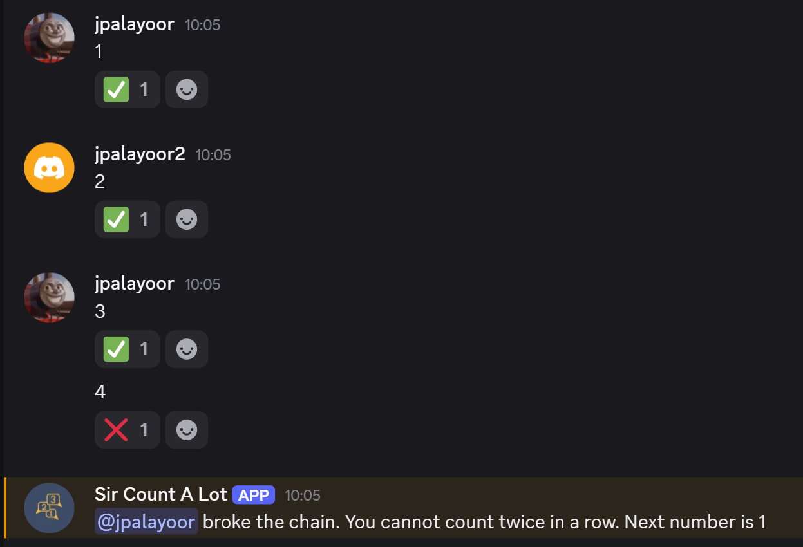
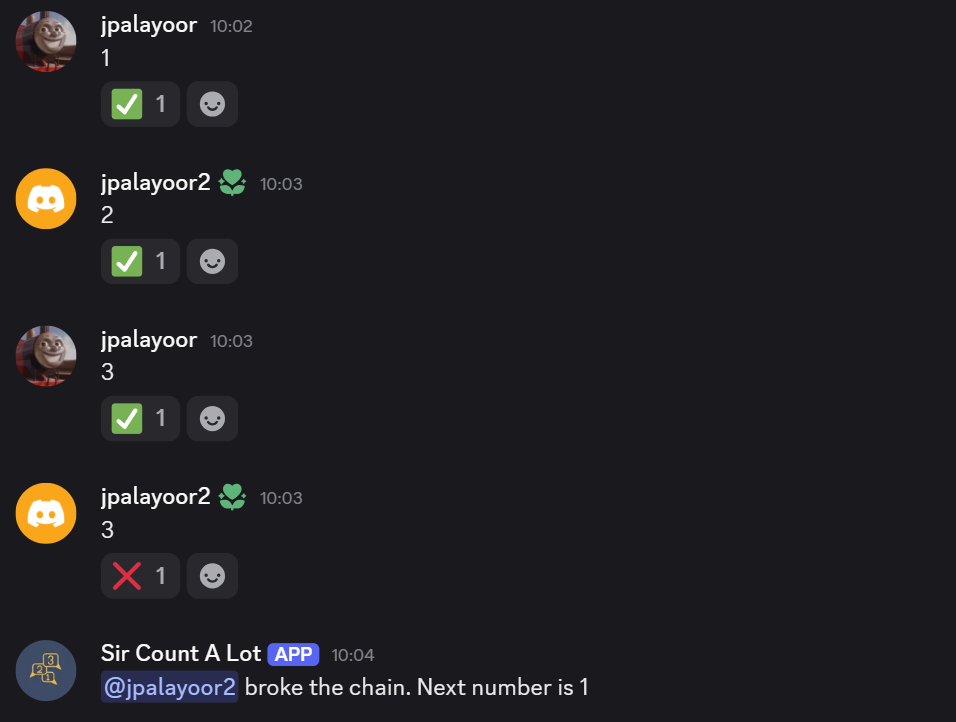
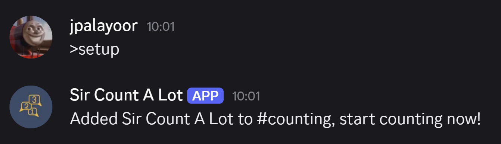
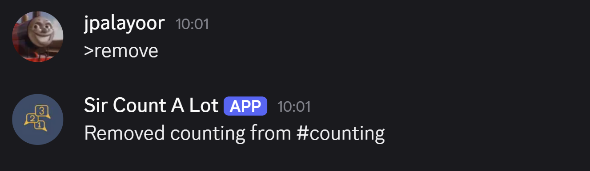
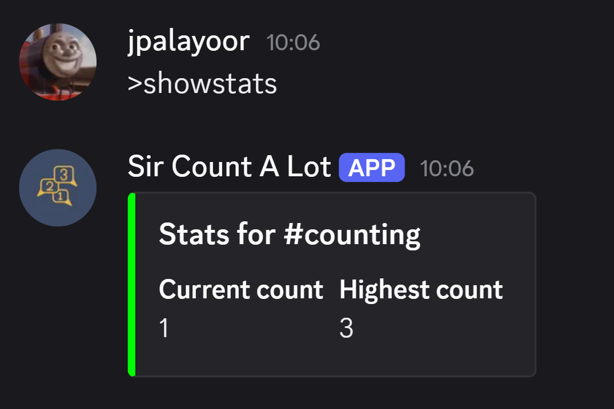

The counting rules
Every message in a set-up channel gets checked. If it's not a plain number, the bot ignores it, someone can still chat normally in the same channel.
if not message.content.lstrip("-").isdigit():
returnFrom there, three things can happen: the number is correct, the same person tries to count twice in a row, or the number is just wrong.
if record["Previous"] == message.author.id:
record["Previous"] = 0
record["Current"] = 0
save_data(data)
await message.add_reaction("❌")
await message.channel.send(
f"{message.author.mention} broke the chain. You cannot count twice in a row. Next number is 1"
)
elif old + 1 == new:
record["Current"] = new
record["Highest"] = max(record["Highest"], new)
record["Previous"] = message.author.id
save_data(data)
await message.add_reaction("✅")
else:
record["Current"] = 0
record["Previous"] = 0
save_data(data)
await message.add_reaction("❌")
await message.channel.send(f"{message.author.mention} broke the chain. Next number is 1")record["Previous"] stores whoever counted last.
If the same person's ID shows up twice in a row, the chain
resets, even if the number itself would've been correct.
That's a different failure than just posting the wrong
number, so it gets its own message.


Either way, the count resets to 0 and the next expected
number goes back to 1. A correct count just bumps
Current up by one and tracks
Highest if it's a new record.
Setting up a channel
>setup and >remove are
administrator functions
@bot.command(name="setup")
@commands.has_permissions(administrator=True)
async def setup_command(ctx):
async with data_lock:
data = load_data()
existing = get_channel_record(data, str(ctx.guild.id), str(ctx.channel.id))
if existing is not None:
await ctx.send(f"Sir Count A Lot is already set up in #{ctx.channel.name}")
return
ensure_channel_record(data, ctx.guild, ctx.channel)
save_data(data)
await ctx.send(f"Added Sir Count A Lot to #{ctx.channel.name}, start counting now!")Each server and channel gets its own independent record, so the bot can run a separate counting game in as many channels as admins set up, across as many servers as it's in.


Tracking stats
Data persists to a plain JSON file on disk, loaded and saved around every command and every counted message.
@bot.command(name="showstats")
async def showstats_command(ctx):
async with data_lock:
data = load_data()
record = get_channel_record(data, str(ctx.guild.id), str(ctx.channel.id))
if record is None:
await ctx.send(f"Sir Count A Lot isn't set up in #{ctx.channel.name}. Run `>setup` first.")
return
embed = discord.Embed(title=f"Stats for #{ctx.channel.name}", color=discord.Color.from_rgb(0, 255, 4))
embed.add_field(name="Current count", value=record["Current"], inline=True)
embed.add_field(name="Highest count", value=record["Highest"], inline=True)
await ctx.send(embed=embed)
data_lock is an asyncio.Lock,
wrapped around every read and write to the data file.
Discord messages can arrive faster than a single
load-modify-save cycle finishes, without the lock, two
counts arriving close together could both read the same
"before" state and step on each other's update.